Fearless Concurrency
threads, channels, locks, and the two words that make it all safe.
Threads
Book · §16.1One program, many workers. First the bug that makes concurrency scary, then thread::spawn, join, and move: create a worker, wait for it, and hand it what it needs.
One jar, two hands
Here's the cat cafe on a Friday night. One tip jar behind the counter, two baristas on the same shift, and the bug that makes every language nervous.
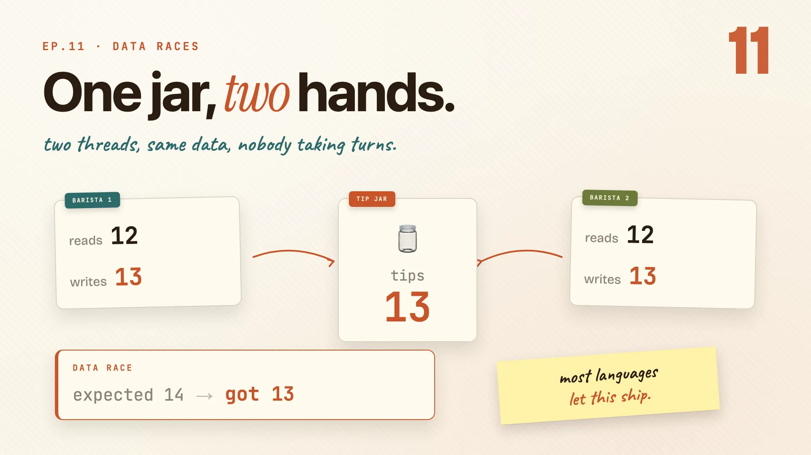
- Both baristas read 12. They look in the jar at the same moment, so they see the same number.
- Both write 13. Each drops a tip in and writes back what they computed. Two tips went in, the jar says thirteen. One tip vanished.
- That is a data race: two threads, one piece of data, at least one of them writing, nobody taking turns.
In most languages this compiles, ships, and falls over once a week in production. Rust refusing to compile it is the gift this episode is about.
Remember: a data race is two threads, one value, at least one write. most languages let it ship.
Concurrent vs parallel
Two words get mixed up constantly, and they are not the same thing. The cafe makes the difference easy to see.
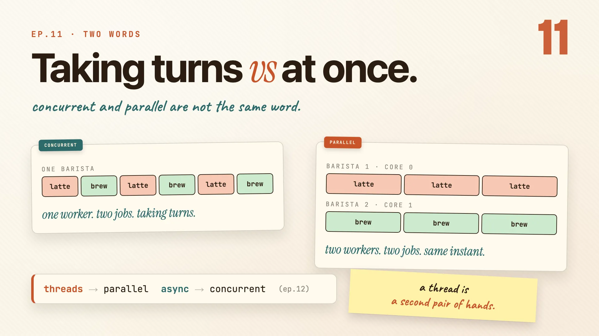
| Word | In the cafe |
|---|---|
| concurrent | one barista, two orders, taking turns. progress on both, one hand. |
| parallel | two baristas, two orders, at the same instant, on two cores. |
- Threads give you parallel. Real operating system threads, scheduled on real cores.
- Async gives you concurrent. That is next episode. This one is threads.
Remember: a thread is a second pair of hands.
spawn starts a worker
The standard library ships real threads. Hand a closure to thread::spawn and it starts running immediately, beside the code that called it.
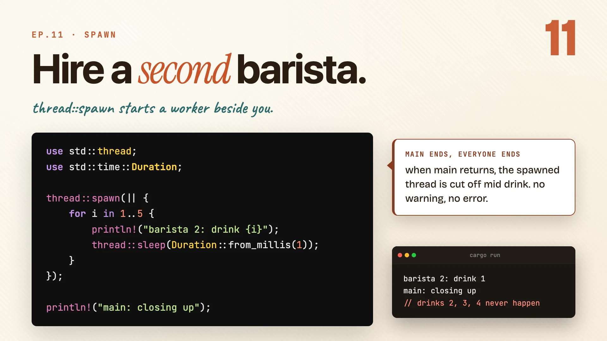
use std::thread;
use std::time::Duration;
thread::spawn(|| {
for i in 1..5 {
println!("barista 2: drink {i}");
thread::sleep(Duration::from_millis(1));
}
});
println!("main: closing up");
- Everything inside the closure is the new thread's whole job. Four drinks, then done.
- spawn does not wait. The very next line runs while the barista is still working.
- The catch: when
mainreturns, the spawned thread is cut off mid drink. The run prints one drink, thenmain: closing up, and drinks 2, 3, 4 never happen. No warning, no error.
Remember: when main ends, every spawned thread ends with it.
join waits for your barista
spawn hands something back: a JoinHandle. Think of it as your receipt for that thread.
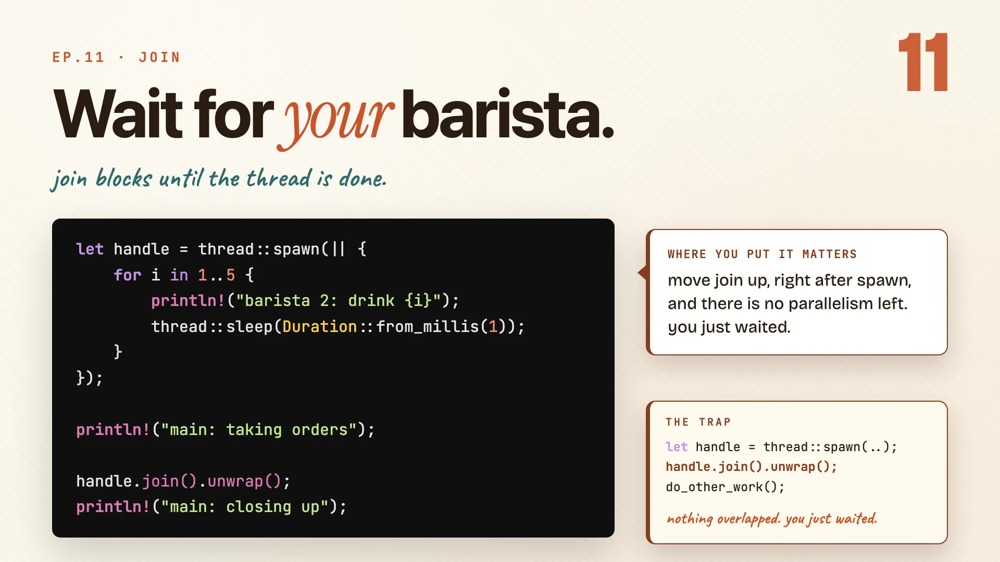
let handle = thread::spawn(|| {
for i in 1..5 {
println!("barista 2: drink {i}");
thread::sleep(Duration::from_millis(1));
}
});
println!("main: taking orders");
handle.join().unwrap();
println!("main: closing up");
join()blocks right there until the thread is done. Now nothing gets lost: all four drinks land before main closes up.- It returns a
Result, because the thread might have panicked instead of finishing. Hence theunwrap(). - Where you put it matters. Move the
joinup, right afterspawn, and there is no parallelism left. Nothing overlapped. You just waited.
Remember: join blocks until the thread is done; where you put it decides your parallelism.
move hands it over
The barista needs the order list, so the closure has to get at something main owns. Without help, the closure only borrows it, and the compiler will not take that bet: the thread might outlive main.
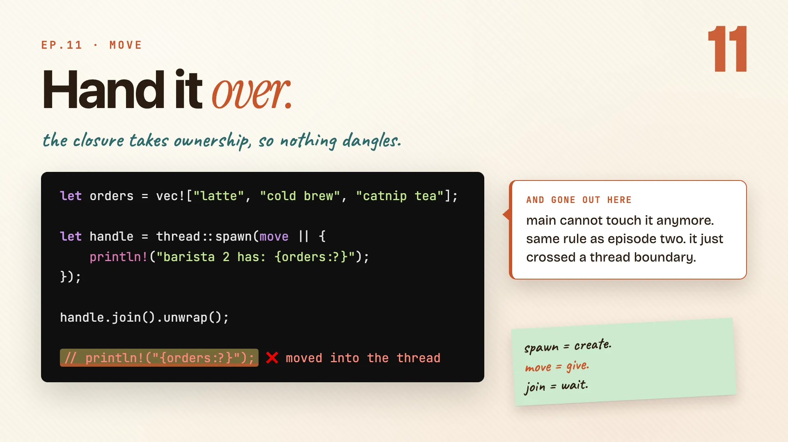
let orders = vec!["latte", "cold brew", "catnip tea"];
let handle = thread::spawn(move || {
println!("barista 2 has: {orders:?}");
});
handle.join().unwrap();
// println!("{orders:?}"); // error: moved into the thread
- One word fixes it.
movetells the closure to take ownership of everything it touches. - Inside the thread the list is fully owned. No reference points back at
mainto go stale. - Out here, main cannot touch it anymore. Same rule as episode two. It just crossed a thread boundary.
Remember: spawn = create. move = give. join = wait.
scope borrows instead
move is not always what you want. Sometimes you need the list back afterwards. thread::scope makes a promise to the compiler: every thread started inside finishes before the block returns.
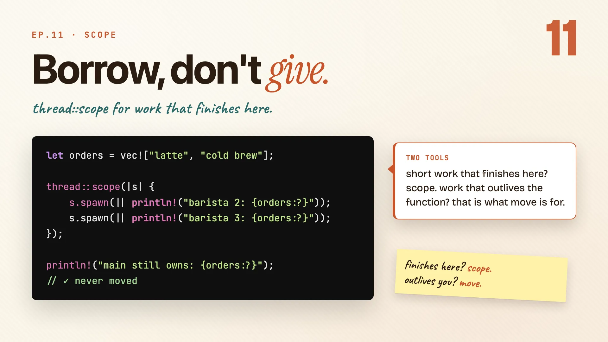
let orders = vec!["latte", "cold brew"];
thread::scope(|s| {
s.spawn(|| println!("barista 2: {orders:?}"));
s.spawn(|| println!("barista 3: {orders:?}"));
});
println!("main still owns: {orders:?}"); // never moved
- Scoped threads can borrow. No
move, no clone, noArc. Plain references, because the compiler knows they cannot outlive the scope. - When the block ends, both baristas are already done, and main still owns everything.
- Two tools, not a better one: short work that finishes here takes
scope; work that outlives the function is whatmoveis for.
Remember: finishes here? scope. outlives you? move.
Channels
Book · §16.2Don't share it, send it. A channel moves values from thread to thread, one owner the whole way, so there is nothing to race on.
Put it on the rail
The standard library calls this mpsc: many producers, single consumer. One call gives you two ends, and you move values from one to the other instead of sharing them.
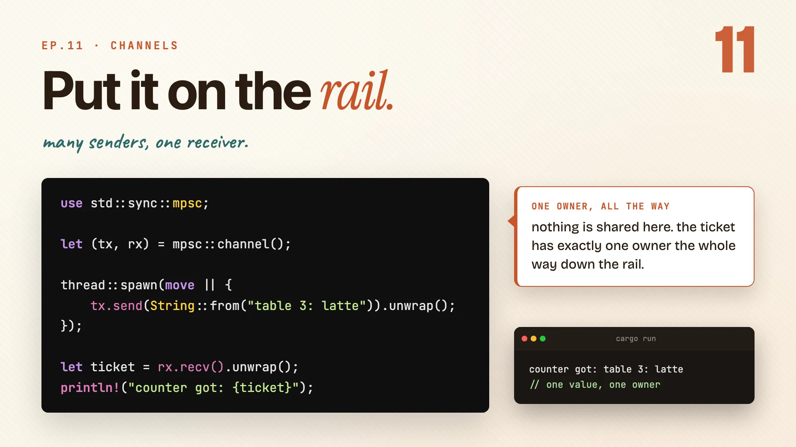
use std::sync::mpsc;
let (tx, rx) = mpsc::channel();
thread::spawn(move || {
tx.send(String::from("table 3: latte")).unwrap();
});
let ticket = rx.recv().unwrap();
println!("counter got: {ticket}");
txis the sending end,rxthe receiving end. The barista sends a ticket down the rail.sendreturns aResult, because the receiving end might be gone.recvblocks until a ticket shows up.try_recvchecks and returns straight away instead.
Nothing is shared here. The ticket has exactly one owner the whole way down the rail. That is the trick, and it is the thesis of this chapter.
Remember: one owner, all the way down the rail.
Once it's sent, it's gone
send takes ownership. Not a copy, not a loan: the ticket is on the rail now and the barista has nothing.
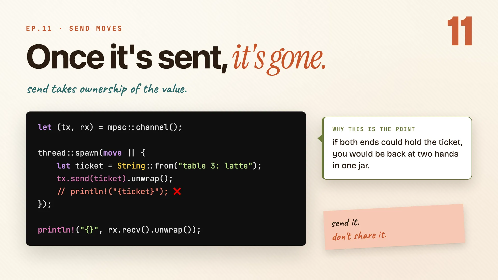
let (tx, rx) = mpsc::channel();
thread::spawn(move || {
let ticket = String::from("table 3: latte");
tx.send(ticket).unwrap();
// println!("{ticket}"); // error: borrow of moved value
});
println!("{}", rx.recv().unwrap());
- Peeking afterwards does not compile. Same "borrow of moved value" error you met in episode two.
- And that is the whole point. If both ends could hold the ticket, you would be back at two hands in one jar.
Remember: send it. don't share it.
The rail is an iterator
At the counter you do not call recv over and over. The receiving end is just an iterator: you loop over it directly.
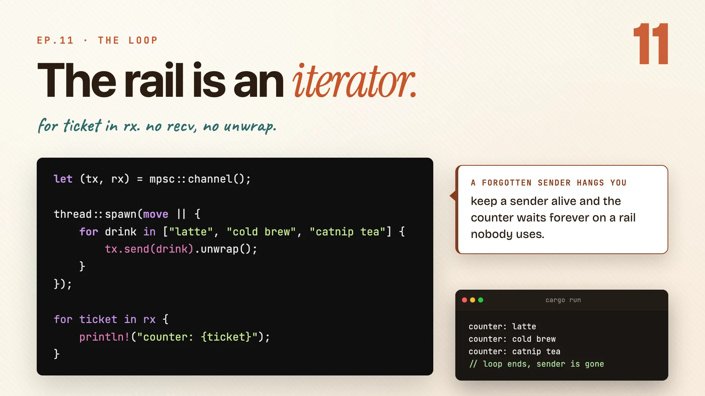
let (tx, rx) = mpsc::channel();
thread::spawn(move || {
for drink in ["latte", "cold brew", "catnip tea"] {
tx.send(drink).unwrap();
}
});
for ticket in rx {
println!("counter: {ticket}");
}
- Every turn of the loop blocks until the next ticket lands. No
recv, nounwrap. - It ends on its own. When every sender has been dropped, the channel closes and the loop finishes.
- Flip side: a forgotten sender hangs your program. The counter waits forever on a rail nobody uses.
Remember: rx is an iterator; the loop ends when the last sender is dropped.
Four hands, one counter
Four baristas now. Each one needs their own end of the rail, so you clone the sender, and each clone moves into its own thread.
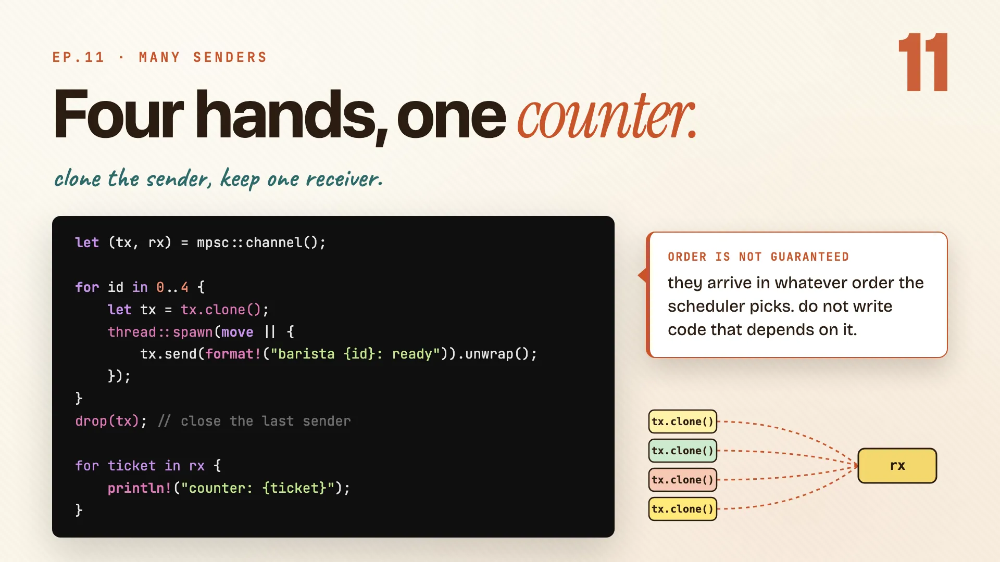
let (tx, rx) = mpsc::channel();
for id in 0..4 {
let tx = tx.clone();
thread::spawn(move || {
tx.send(format!("barista {id}: ready")).unwrap();
});
}
drop(tx); // close the last sender
for ticket in rx {
println!("counter: {ticket}");
}
- Then drop the original. Main is still holding a sender, and while it holds one the rail never closes.
- One consumer reads them all. The loop runs until all four have finished, then ends by itself.
- Order is not guaranteed. Tickets arrive in whatever order the scheduler feels like. Do not write code that depends on it.
Remember: clone the sender, drop the original, never rely on arrival order.
Shared state
Book · §16.3One tip jar, four baristas. Sometimes the data really is shared, and then you need a lock, a thread-safe way to share the lock, and one warning about what Rust cannot catch.
Mutex: one hand at a time
Here's the tip jar with a lid, and the design decision that makes Rust's mutex special: the lid and the jar are one value. Single-threaded first, exactly like the book does it.
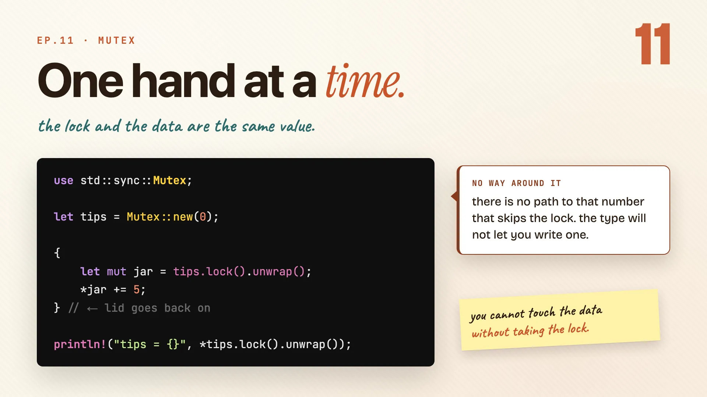
use std::sync::Mutex;
let tips = Mutex::new(0);
{
let mut jar = tips.lock().unwrap();
*jar += 5;
} // <- lid goes back on
println!("tips = {}", *tips.lock().unwrap());
lock()asks for the lid. If someone else has it, you wait right here until they put it back.- It returns a
Resultbecause a thread can panic while holding the lid (the book calls this poisoning). - What you get is a guard.
*jaris the number inside, and when the guard goes out of scope the lid goes back on. There is no unlock call to forget.
So there is no path to that number that skips the lock. The type will not let you write one.
Remember: you cannot touch the data without taking the lock.
Rc stops at the door
Four baristas need the same jar. Many owners: last episode that meant reach for Rc. So you clone one handle per barista, hand them out, spawn, and it does not compile.
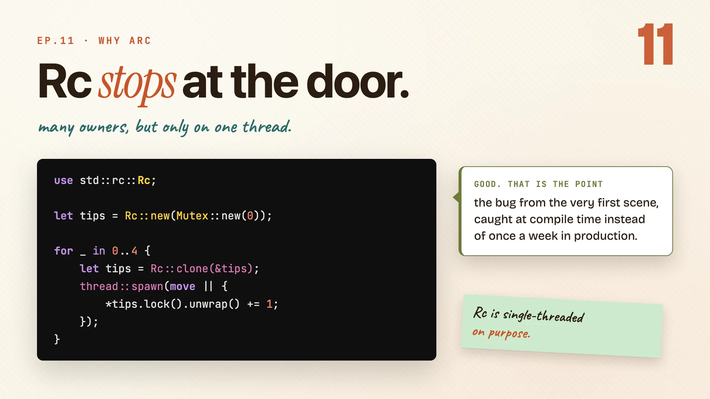
use std::rc::Rc;
let tips = Rc::new(Mutex::new(0));
for _ in 0..4 {
let tips = Rc::clone(&tips);
thread::spawn(move || {
*tips.lock().unwrap() += 1;
});
}
// error: `Rc<Mutex<i32>>` cannot be sent between threads safely
- Not at runtime, not sometimes. The compiler stops you before anything runs.
- The reason:
Rckeeps its count with plain arithmetic. Two threads bumping it at once would lose a count, so Rust refuses. - That is the bug from the very first scene, caught at compile time instead of once a week in production.
Remember: rc is single-threaded on purpose; it cannot be sent between threads.
Arc + Mutex, the pattern
Arc: atomic reference count. Same idea as Rc, but the count itself is thread safe. Arc shares the jar, Mutex takes turns.
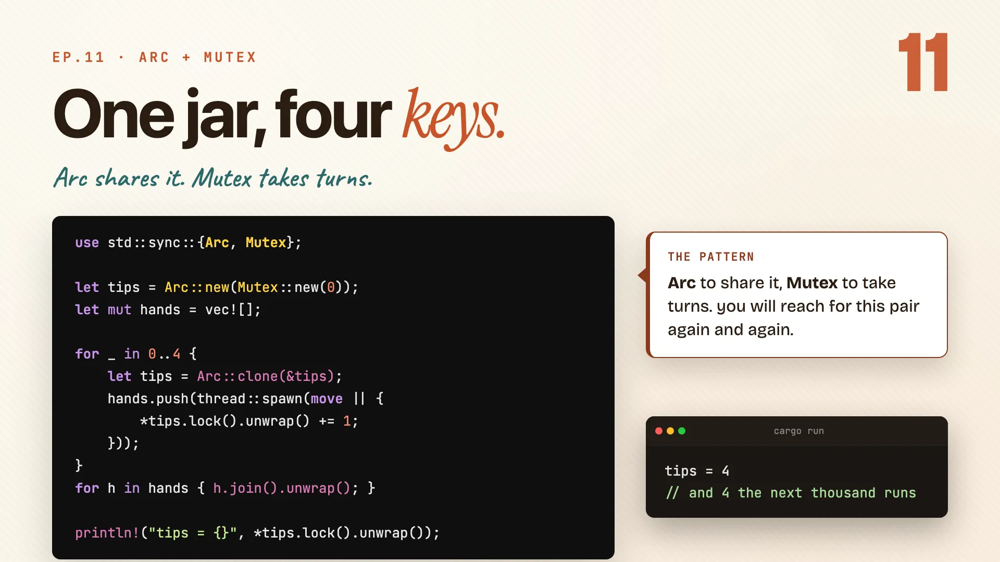
use std::sync::{Arc, Mutex};
let tips = Arc::new(Mutex::new(0));
let mut hands = vec![];
for _ in 0..4 {
let tips = Arc::clone(&tips);
hands.push(thread::spawn(move || {
*tips.lock().unwrap() += 1;
}));
}
for h in hands { h.join().unwrap(); }
println!("tips = {}", *tips.lock().unwrap());
- Cloning an
Arcis cheap. It bumps a counter, it does not copy the jar, and there is still only one jar. - All four reach for the same lock. Four baristas, one jar, one hand in it at a time.
- Collect the handles and join every one before you read the total.
The answer is 4. Every time. Run it a thousand times and it is still 4. No lost tip: this is the pattern you will reach for again and again.
Remember: arc shares it. mutex takes turns.
The pairs you already know
If Arc and Mutex feel familiar, they should. You met their single-threaded twins in episode ten.
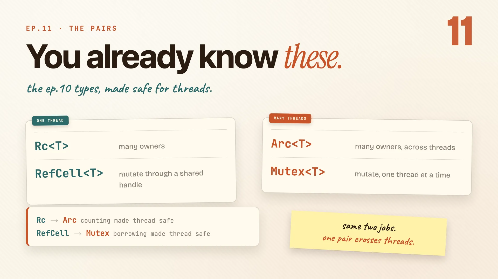
| One thread (ep.10) | Many threads (ep.11) | The job |
|---|---|---|
Rc<T> |
Arc<T> |
many owners of one value |
RefCell<T> |
Mutex<T> |
mutate through a shared handle |
- Same two jobs. The right-hand column is the left-hand column with the counting and the borrowing made thread safe.
- You pay a little for it. Atomics and locks are not free. Use them when you actually share.
Remember: same two jobs. one pair crosses threads.
Deadlock, the one it can't catch
One more thing about locks, and it is the thing Rust does not fix for you. Two locks, two threads, opposite order.
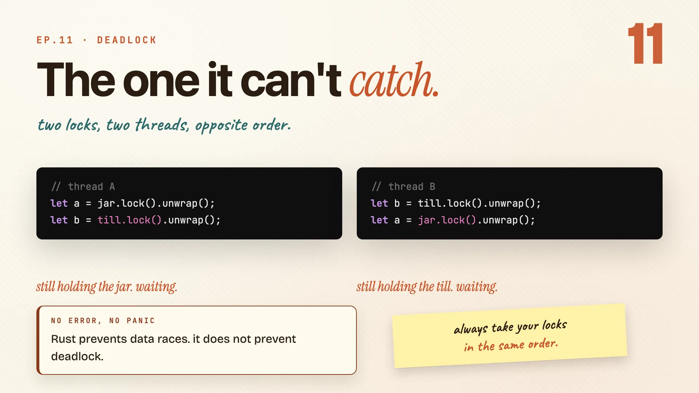
// thread A
let a = jar.lock().unwrap();
let b = till.lock().unwrap();
// thread B
let b = till.lock().unwrap();
let a = jar.lock().unwrap();
// A holds the jar, waiting on the till.
// B holds the till, waiting on the jar. neither moves.
- This compiles. It runs. And then it just stops, with no error and no panic.
- Rust prevents data races. It does not prevent deadlock.
- The fix is boring and always works: every thread takes its locks in the same order.
Remember: always take your locks in the same order.
Send & Sync
Book · §16.4Two words the compiler counts on. Every rule in this episode has been enforced by two traits you never wrote. Time to meet them.
Send: safe to hand over
You have already been using this word without seeing it. Send means the value is safe to move to another thread: ownership can cross the boundary.
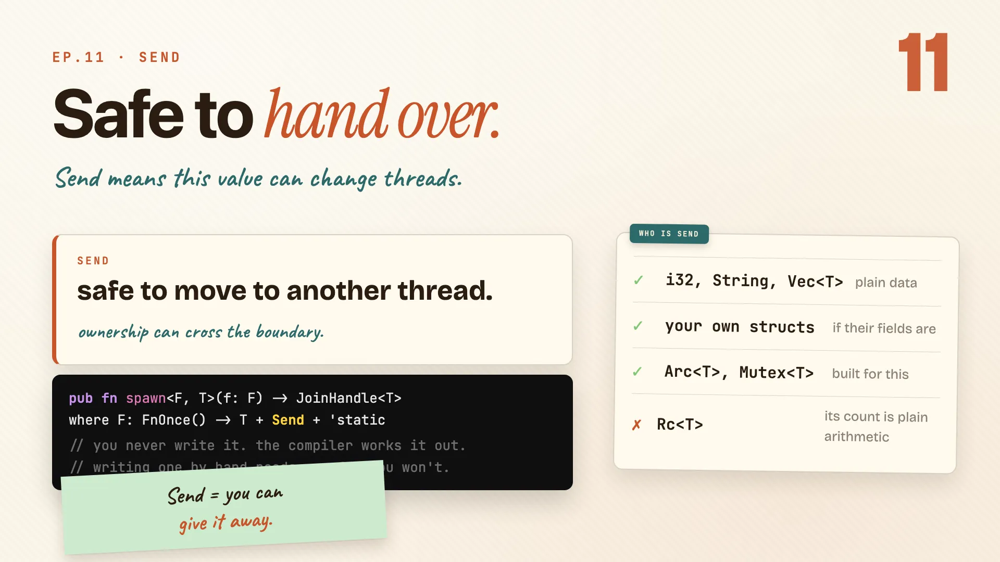
pub fn spawn<F, T>(f: F) -> JoinHandle<T>
where F: FnOnce() -> T + Send + 'static
// you never write it. the compiler works it out.
- Almost every type you write is
Send. Numbers, strings, vectors, your own structs (if their fields are). You get it for free. - The one you have met that is not:
Rc. Its count is plain arithmetic, so it stays on one thread. - The compiler derives it from what a type is made of. Writing it by hand takes
unsafe, and you won't.
You only notice Send when it is missing, and then it is a compile error, not a crash.
Remember: Send = you can give it away.
Sync: safe to share
Sync is the other half. Not "can I move it" but "can we all look at it": safe for many threads to hold a reference to at once.
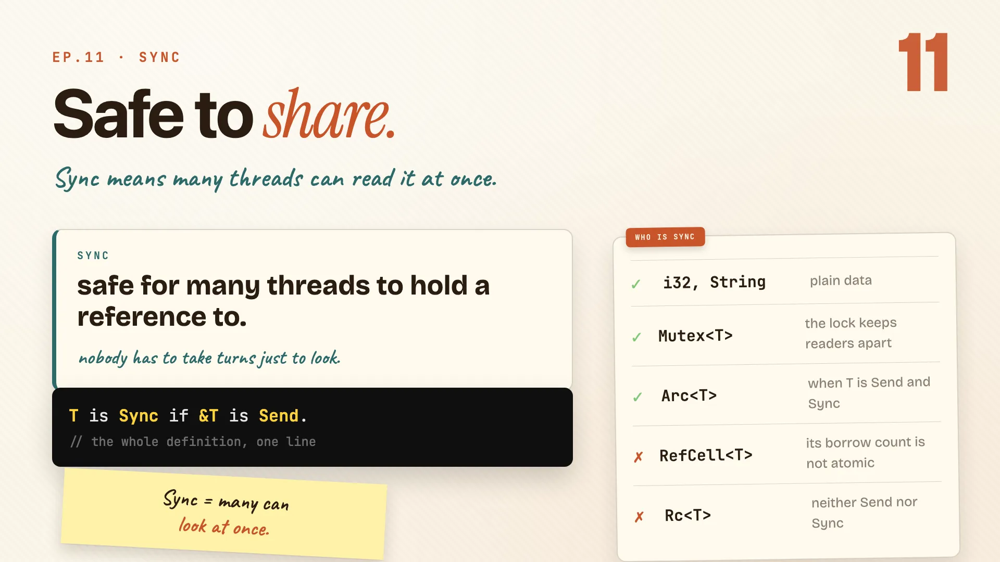
// the whole definition, one line:
// T is Sync if &T is Send.
- Plain data is
Sync. Nobody has to take turns just to look. MutexisSync, because taking the lock is what keeps the readers apart. That is exactly why it exists: it takes something you cannot share and makes it shareable.RefCellis not. It tracks borrows with an ordinary counter, and two threads would trample it.
Remember: Sync = many can look at once.
Who's what
The whole family in one place. You do not memorize this table; you meet it one compile error at a time.
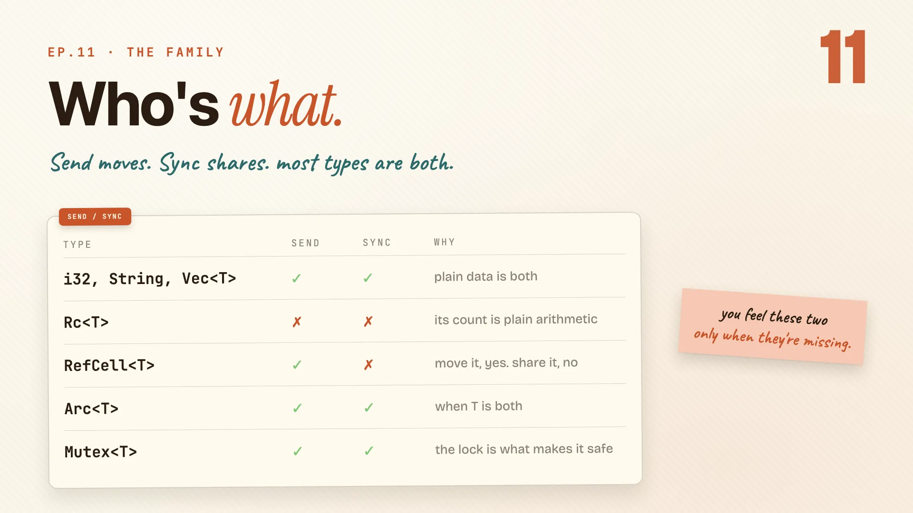
| Type | Send | Sync | Why |
|---|---|---|---|
i32, String, Vec<T> |
yes | yes | plain data is both |
Rc<T> |
no | no | its count is plain arithmetic |
RefCell<T> |
yes | no | move it, yes. share it, no |
Arc<T> |
yes | yes | when T is both |
Mutex<T> |
yes | yes | the lock is what makes it safe |
RefCellis the interesting row. You can move it to another thread; you cannot share it with two. That row is what makes the two words click.- You will never write these two words yourself. You will only ever read them in an error message.
Remember: you feel Send and Sync only when they're missing.
Put it together
Book · Ch 16Closing out the cafe. Four orders on the board, and tonight's total to compute: split the work, run it in parallel, combine the results, and know which tool to reach for next time.
Hand out the work
Closing time. Four amounts in cents, and you want the total. Split the work so nothing is shared, and you do not need a lock at all.
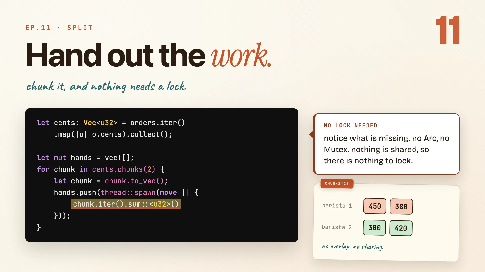
let cents: Vec<u32> = orders.iter()
.map(|o| o.cents).collect();
let mut hands = vec![];
for chunk in cents.chunks(2) {
let chunk = chunk.to_vec();
hands.push(thread::spawn(move || {
chunk.iter().sum::<u32>()
}));
}
chunks(2)hands you slices that do not overlap. One per barista.- Each thread owns its slice:
to_vec()copies it in. Two small copies, no borrowing across threads. - Notice what is missing. No
Arc, noMutex. Nothing is shared, so there is nothing to lock.
Remember: share nothing and there is nothing to lock.
Then add it up
Here is the part people miss: whatever the closure returns comes straight back out of join. So main collects the subtotals and adds them up itself.
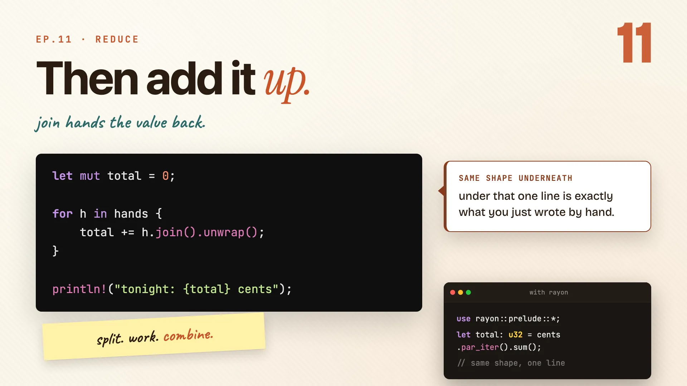
let mut total = 0;
for h in hands {
total += h.join().unwrap();
}
println!("tonight: {total} cents");
- Main is the only thread touching
total, so no lock there either. - One number falls out the end. Split it, work in parallel, combine. That is the whole shape.
- In real code, for pure data work like this, most people reach for the
rayoncrate:cents.par_iter().sum(). Under that one line is exactly what you just wrote by hand.
Remember: split. work. combine.
Move it or share it
Two tools, and people agonise over which one. The answer is usually obvious: the shape of the problem picks the tool.
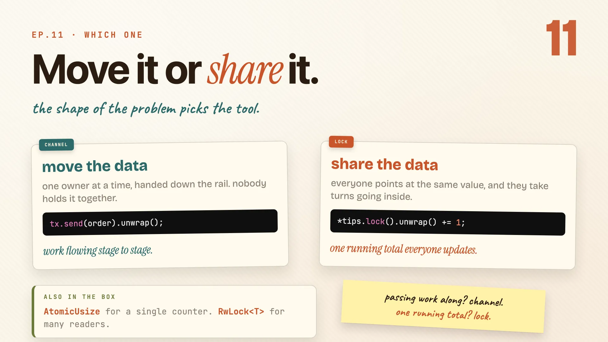
| Channel | Lock | |
|---|---|---|
| What it does | moves the data, one owner at a time | shares the data, everyone takes turns |
| Reach for it when | work flows from one stage to the next | one running total that everybody updates |
| Looks like | tx.send(order) |
*tips.lock().unwrap() += 1 |
- There is more in the box: a single counter has atomics (
AtomicUsize), and many readers with few writers hasRwLock<T>. Signposts, not today's lesson. - Same rules underneath all of them: ownership, borrowing, and the compiler checking your work.
Remember: passing work along? channel. one running total? lock.
The whole episode in one line:
Threads do parallel work. Fearlessly. Spawn, channels, locks, and the borrow checker scaling to threads.
Cheatsheet recap
One line per idea, in order. Skim this when you just need the reminder.
| Idea | Remember |
|---|---|
| One jar, two hands | a data race is two threads, one value, at least one write. most languages let it ship. |
| Concurrent vs parallel | a thread is a second pair of hands. |
| spawn starts a worker | when main ends, every spawned thread ends with it. |
| join waits for your barista | join blocks until the thread is done; placement decides your parallelism. |
| move hands it over | spawn = create. move = give. join = wait. |
| scope borrows instead | finishes here? scope. outlives you? move. |
| Put it on the rail | one owner, all the way down the rail. |
| Once it's sent, it's gone | send it. don't share it. |
| The rail is an iterator | rx is an iterator; the loop ends when the last sender is dropped. |
| Four hands, one counter | clone the sender, drop the original, never rely on arrival order. |
| Mutex: one hand at a time | you cannot touch the data without taking the lock. |
| Rc stops at the door | rc is single-threaded on purpose; it cannot be sent between threads. |
| Arc + Mutex, the pattern | arc shares it. mutex takes turns. |
| The pairs you already know | same two jobs. one pair crosses threads. |
| Deadlock, the one it can't catch | always take your locks in the same order. |
| Send: safe to hand over | Send = you can give it away. |
| Sync: safe to share | Sync = many can look at once. |
| Who's what | you feel Send and Sync only when they're missing. |
| Hand out the work | share nothing and there is nothing to lock. |
| Then add it up | split. work. combine. |
| Move it or share it | passing work along? channel. one running total? lock. |
Practice: Rustlings
20_threads, plus a second pass over 19_smart_pointers.